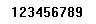
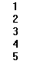

|
DrawingDirection Property |
Specifies the direction in which the mtext paragraph is to be read.
Signature
object.DrawingDirection
object
MText
The object this property applies to.
DrawingDirection
acDrawingDirection enum; read-write
acLeftToRight
acTopToBottom
acRightToLeft (Reserved for future use)
acBottomToTop (Reserved for future use)
acByStyle (Reserved for future use)
Remarks
For languages such as English or Spanish, text is read horizontally, left to right. For languages such as Chinese or Japanese, sometimes text is read vertically, top to bottom. AutoCAD will draw the text according to this property setting.
 |
| Left to right |
 |
| Top to bottom |
The settings acRightToLeft, acBottomToTop, and acByStyle are reserved for future use and cannot be used in this release.
| Comments? |